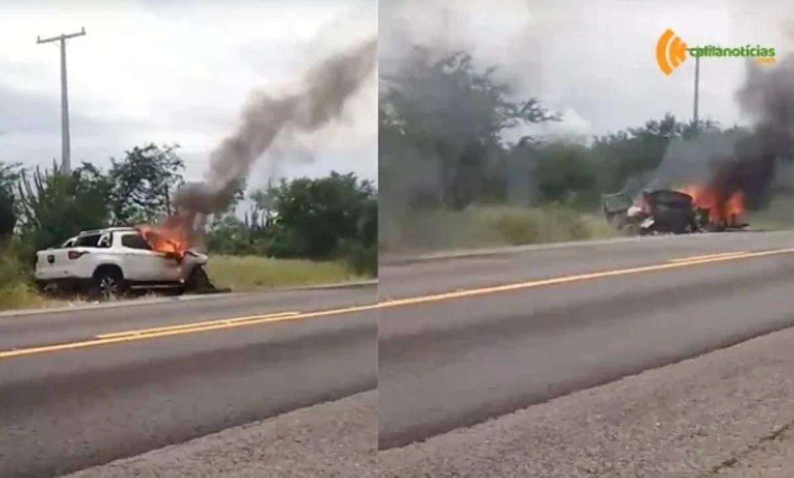

Repórter Davi
Notícias de Feira de Santana e Região
Repórter Davi
Notícias de Feira de Santana e Região
A expectativa é que a investigação determine os detalhes do acidente que vitimou os cinco jovens e o incêndio que destruiu os veículos
Publicado em 28/03/2026

Prefeitura de Feira de Santana antecipa campanha e inicia vacinação contra a gripe — Foto: Renata Leite
Menos de 24 horas após o grave acidente que resultou na morte de cinco jovens, na noite de sexta-feira (27), os veículos envolvidos na colisão fatal foram totalmente destruídos por um incêndio às margens da BR-324, no trecho entre os municípios de Nova Fátima e Gavião, na tarde deste sábado (28).
Segundo o site Calila Notícias, parceiro do Acorda Cidade, a Brigada Voluntária Anjos da Caatinga foi acionada após circular um vídeo que mostrava os carros em chamas. No entanto, ao chegarem ao local, os brigadistas já encontraram o Fiat Toro e o Volkswagen Gol completamente consumidos pelo fogo. Restaram apenas estruturas metálicas retorcidas e carbonizadas. Até o momento, não há informações oficiais sobre o que motivou o fogo.
A expectativa é que a investigação determine tanto os detalhes do acidente que vitimou os cinco jovens quanto o incêndio que destruiu os veículos no dia seguinte. Até o momento, não há registro de testemunhas que tenham presenciado o início do fogo, e o caso segue sem esclarecimentos.
Inicialmente, a identidade dos ocupantes do Fiat Toro e o estado de saúde deles não foi divulgado. Posteriormente, foi confirmado que no veículo estavam o vereador de Juazeiro Gleidson Azevedo (PP) e seu pai. Ambos sofreram lesões, mas passam bem e foram medicados em uma unidade de saúde de Juazeiro.
De acordo com a RedeGN, site parceiro do Acorda Cidade, o vereador Aníbal esteve na unidade de saúde com o colega de parlamento. Segundo ele, tanto Gleidson Azevedo quanto seu pai estão fora de risco. O vereador sofreu pancadas em várias partes do corpo, mas está estável.